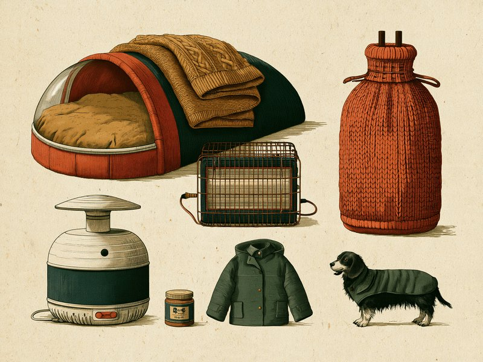

冬の道具は「暖める」「床から離す」「守る」「乾燥を補う」「お出かけ」の五つの場面に分けて考えると、何を優先してそろえればよいかが見えやすくなります。 Which winter products actually help a dog or cat? Think in five scenes: warming the bed, lifting it off the cold floor, guarding against burns and cords, easing dry air, and going outside. Each calls for a different kind of tool.
冬の道具選びの軸は「自分で離れられる暖かさ」です。まず手持ちの毛布・寝床の置き場所・濡れタオルで足りるかを確かめ、足りない場面だけ道具を足すのがおすすめ。熱源は温度を控えめにして別の居場所も用意し、電気の暖房器具は留守中に使わないのが基本です。
🔍 ちょっと寄り道:暖房器具と犬猫にも「合う・合わない」があるように、人と人にも相性があります。気になった方は相性診断を試してみてください。
※本記事のリンクにはアフィリエイトリンクが含まれます。Amazonのアソシエイトとして、Tiny Wondersは適格販売により収入を得ています。
この記事は道具の選び方に絞った内容です。室温の目安や寒がっているサイン、冬に減りがちな水分や運動の話など、基本の考え方は犬猫の冬の寒さ対策ガイドでまとめていますので、あわせて読んでいただくと道具の位置づけがつかみやすくなります。なお、参考情報に付く「(獣医師監修)」は各出典の表記で、この記事自体は獣医師の監修を受けていません。
この記事で紹介する5カテゴリ:
- ペットヒーター・ホットカーペット・湯たんぽ — 寝床を暖める
- ドーム型ベッド・ハンモック・ケージ下の断熱 — 床の冷気から離す
- ヒーターガード・コードカバー — 熱源やコードとの距離をつくる
- 加湿器 — 暖房による乾燥を補う
- 犬の防寒着・肉球ケア — 冬の散歩を少し楽にする
温かい寝床のための器具:ペットヒーター・ホットカーペット・湯たんぽ
寝床を暖める器具は、「温度を控えめにして、いつでも離れられるようにする」ことを前提に選ぶのが基本です。低温やけどは44〜50℃程度の熱源に長時間触れ続けることで起きるとされており、気持ちよさそうに見えても、動かずにいる時間が長いほどリスクは積み重なると考えられます。
ホットカーペットを使うなら、38℃以下を目安にしてタオルなどを敷き、体に直接当たらないようにする方法が動物病院から勧められています。人用の暖房器具を流用せず、ペット用として販売されているものから選び、温度を調節できるか、過熱を防ぐ仕組みや電気用品の安全表示(PSEマーク)があるか、コードが保護されているかを確かめておきたいところ。「暖かければ暖かいほど良い」ではなく、「低めで十分」という前提でつくられた製品のほうが、この使い方にはなじみやすいでしょう。
湯たんぽは電源を使わない点が魅力ですが、厚手のカバーで包み、時々触って温度を確かめることが前提です。カバーが付属しているか、破れにくい素材か、そして「熱すぎない状態」で使えるかを確かめておきたいところです。噛みぐせのある子には、かじれない状態でなければ使わないのが無難です。お湯や加熱の方法は必ず製品の取扱説明書どおりに。電子レンジで温めるタイプは、加熱しすぎによる破裂でやけどをした事例がNITE(製品評価技術基盤機構)から紹介されているため、表示の出力・時間を守ってください。ペットヒーターについては、別の居場所も用意して長時間の連続使用は避けるよう勧められていますので、ヒーターの上だけが暖かい部屋にしないことが大切です。
もうひとつ忘れたくないのが、ホットカーペットなど電気の暖房器具は留守中に使わない、電源を切ることが基本とされている点です。その前提で選ぶなら、「留守中も暖かいように」ではなく「在宅中の数時間を快適にする」道具として考えると、必要なサイズや機能が絞りやすくなります。商品の説明に「留守番OK」とあっても、この記事は留守中に使わない前提でお伝えしています。詳しい考え方は冬の寒さ対策ガイドの暖房器具の節でまとめています。
参考にした情報: つだ動物病院「気をつけたい愛犬・愛猫の低温やけど」 tsuda-vet.com / 東福岡たぬま動物病院「犬猫の低温やけどに注意」 tanuma-vet.com / アニコム損保「猫は寒がり? 冬の寒さ対策と飲水の工夫」 anicom-sompo.co.jp / ペトコト「猫の冬の室温と寒さ対策(獣医師監修)」 petokoto.com / NITE(製品評価技術基盤機構)製品安全メールマガジン第160号 nite.go.jp
床から離す寝床:ドーム型ベッド・ハンモック・ケージ下の断熱
熱源を足す前に見直したいのが、寝床の「高さ」と「置き場所」です。床は冷気が溜まりやすい場所とされ、猫の寝床は床から5〜15cmほど高い位置が目安とされています。窓際・壁際は外気で冷えやすいので避け、寝床は少し高いところに置くと冷えが防げる場合もあるとされています。
ドーム型ベッドは、底面の厚みで床から体を離しつつ、屋根で体温を逃がしにくくする構造の寝床です。電源を使わないため、熱源そのものによる事故の心配が少ない点が、暖房器具との大きな違いといえます(ほつれた中綿や飾りの誤飲には注意が必要です)。選ぶときは、丸まったときの体がすっぽり収まるサイズであること、底の厚みがしっかりあること、そしてカバーを外して洗えるかどうかを確かめてみてください。
ハンモック型のベッドは、床から離すという点では素直な選択肢です。ただし、足場が安定していないと登りたがらない子もいるので、揺れにくい構造かどうか、体重に見合った耐荷重かどうかを見ておくと失敗しにくくなります。冬に使うなら、保温性のある素材(フリースなど)のものを選ぶとよいでしょう。ケージやクレートを使っている犬なら、ケージの下や壁との間に毛布を挟む方法が動物病院から勧められています。冬は壁や床そのものが非常に冷たくなるため、新しい寝床を買う前に、手持ちの毛布を一枚かませるだけでも試す価値があります。
どの寝床を選ぶにしても、置き場所しだいで暖かさは変わります。暖房の温風の出口を避けて自分で移動できる環境にしておく考え方は、冬の寒さ対策ガイドでまとめています。
Amazonで「ペット ハンモック ベッド 冬 あったか」を探す
参考にした情報: どうぶつ病院京都 四条堀川「猫の冬の寒さ対策|室温や注意点を獣医師が解説」 animal-shijo.com / アニコム損保「猫は寒がり? 冬の寒さ対策と飲水の工夫」 anicom-sompo.co.jp / アイ動物クリニック「犬の冬の室温と寒さ対策」 i-animalclinic.org / 旭化成ホームズ「ペットと暮らす家の冬の温度管理(獣医師監修)」 asahi-kasei.co.jp
安全のためのグッズ:ヒーターガード・コードカバー
暖める道具をそろえたら、次は「近づきすぎない」「噛まない」ための道具です。ストーブにはガードを付けるよう動物病院から勧められており、ガスファンヒーターは温風が当たり続けると低温やけどのリスクがあると指摘されています。ガードは熱を防ぐ道具というより、犬猫と熱源のあいだに距離をつくる道具と考えるとわかりやすいでしょう。ガードを付けても、熱源のすぐそばで長く過ごさせないことが前提です。
ヒーターガードを選ぶときは、手持ちの暖房器具を囲える大きさであること、押されても倒れにくい安定した脚部であること、そして猫が上に飛び乗ったり隙間から入り込んだりしにくい形かどうかを見ておきたいところです。温風の出口をふさがず、なおかつ体が近づきすぎない距離を保てるかは、設置してみないとわからない部分もあるので、置き場所を決めてから寸法を測ると失敗が減ります。
コードについては、猫では室内での感電で最も多いのがコードを噛みちぎることとされています。基本はコードを隠す、カバーを使う、未使用時は抜くの三つで、コードカバーはこのうち「隠す・使う」の両方を担う道具です。選ぶ目安は、噛んでも簡単に破れない硬さがあること、コードの太さや本数に合った内径であること、そして家具の裏や壁際に沿わせやすい形かどうか。冬は暖房器具のぶんコードが増えるので、この機会に部屋全体のコードを見直してみてください。カバーだけで安全になるわけではないので、未使用時にコンセントから抜く習慣とあわせて考えましょう。また、トイレ(排尿場所)の近くにはコンセントや電気製品を置かないようにしておくと、より安心です。
猫では、コードを噛んだあと元気そうに見えても数時間〜数日後に症状が出ることがあるとされ、体調に問題がなさそうでも受診するよう勧められています。感電が疑われるときは、触れる前にまずプラグを抜くかブレーカーを落とすなど、電源を切ってからにしてください。コードをかじる心配は犬にもあると考えられるため、犬のいる家でも同じ対策が役に立ちます。
参考にした情報: 東福岡たぬま動物病院「犬猫の低温やけどに注意」 tanuma-vet.com / アニコム損保「猫の感電に注意」 anicom-sompo.co.jp / 旭化成ホームズ「ペットと暮らす家の冬の温度管理(獣医師監修)」 asahi-kasei.co.jp
乾燥対策:加湿器
暖房を使う部屋では、暖かさと引き換えに空気が乾燥しやすくなるため、加湿器か濡れタオルで乾燥を補う工夫が勧められています。加湿器はその工夫を毎日続けやすくする道具で、濡れタオルで足りている家なら無理に買い足す必要はありません。買う場合は、アロマオイル(精油)を使えるタイプに注意してください。猫のいる部屋では精油を拡散させないよう言われており、タンクには水だけを入れるのが基本です。
選ぶときにまず見たいのは、部屋の広さに見合った加湿能力かどうかと、タンクの掃除がしやすい構造かどうかです。加湿器は水を扱う道具なので、手入れがしにくい製品だとつい放置しがちになり、それなら濡れタオルのほうがよかった、ということにもなりかねません。給水口が広い、分解して洗える、といった点を確かめておくと長く使えます。
犬猫のいる部屋では、置き場所も含めて考える必要があります。倒されにくい重さや形か、コードが噛める位置に垂れないか、吹き出し口に鼻先を近づけても熱くない方式か、といった点は、前の節のコードカバーやヒーターガードと同じ「距離をつくる」発想で見ていくとよさそうです。乾燥が気になる日に濡れタオルを一枚干すだけでも助けになるとされていますので、加湿器はあくまで、その手間を減らすための選択肢と考えてください。
参考にした情報: ペトコト「猫の冬の室温と寒さ対策(獣医師監修)」 petokoto.com / ペット保険PS保険「猫に精油(エッセンシャルオイル)を使ったアロマテラピーは危険」 pshoken.co.jp / 旭化成ホームズ「ペットと暮らす家の冬の温度管理(獣医師監修)」 asahi-kasei.co.jp
お出かけ用:犬の防寒着と肉球ケア
この節は犬の散歩向けの内容です(猫の読者は、前の4節が中心になります)。冬の散歩の道具は、寒さに弱いタイプの犬ほど優先度が高くなります。トイ・プードルやマルチーズのようなシングルコートの犬種はアンダーコートがなく寒さに弱い傾向があるとされ、小型犬は地面との距離が近いぶん地表からの冷気を受けやすいと説明されています。寒さに弱い犬種には防寒着を用意するよう動物病院から勧められており、小型犬や短毛種は気温が10℃を下回ると寒さを強く感じやすいとして、散歩時間を15〜20分程度に短縮し、温かい服を着せるよう勧める病院もあります。
防寒着を選ぶときは、首まわり・胴まわりに合ったサイズであることが第一です。きつすぎると嫌がり、ゆるすぎると歩きにくくなります。お腹側まで覆うタイプなら地面の冷気を受けにくいと考えられますが、排泄のしやすさとの兼ね合いもあるので、その子の歩き方や排泄の姿勢に合わせて形を選んでみてください。帰宅後は濡れた足やお腹をしっかり拭くよう勧められていますので、服自体も洗いやすい素材だと扱いが楽です。夕方以降の散歩には、反射材の付いたリードやハーネスも備えになります。ボタンやリボンなどの飾りが少ないものを選び、室内では脱がせておくと、引っかかりや誤飲の心配が減ります。
肉球については、つだ動物病院では、靴は雪の日など特別な場合のみとし、普段から履かせると肉球が弱くなる可能性があると説明されています(足元を守る目的で靴を勧める病院もあります)。乾燥でひび割れが気になるときは、保湿クリームでケアする方法が紹介されています。選ぶ目安は、なめても差し支えない成分として販売されているものか、少量で伸びるか、手早く塗れる容器かどうか。ひどい荒れや出血がある、しきりに足をなめるといったときは、クリームで済ませず動物病院に相談してください。ただし、これらはあくまで散歩を「少し楽にする」ための道具です。散歩前に室内で軽く体を動かしておく、震えや調子の悪そうな様子があれば早めに切り上げる、といった基本の対策と組み合わせてこそ役割を果たします。散歩全体の考え方は冬の寒さ対策ガイドの散歩の節をご覧ください。
参考にした情報: アニコム損保「犬は寒さに強い? 寒がっているサインと冬の対策」 anicom-sompo.co.jp / みかん動物病院「冬の散歩と寒さ対策」 animal-hospital.co.jp / 姉ヶ崎どうぶつ病院「冬の散歩で気をつけたいこと」 anegasaki-ah.jp / つだ動物病院「冬のお散歩で注意していただきたいこと」 tsuda-vet.com
ミニクイズ:ホットカーペットなど電気の暖房器具は、留守中もつけっぱなしにしておいたほうが安心?(タップして答えを見る)
こたえ×。留守中は使わない(電源を切る)ことが基本です。低温やけどは44〜50℃程度の熱源に長時間触れ続けることで起きるとされ、ホットカーペットは在宅中でも38℃以下を目安にしてタオルなどを敷く方法が動物病院から勧められています。